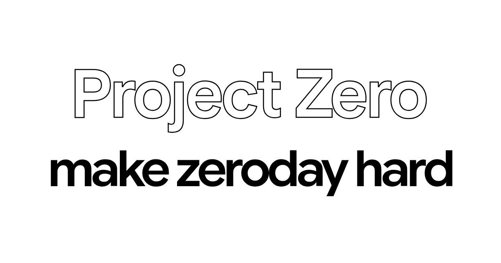
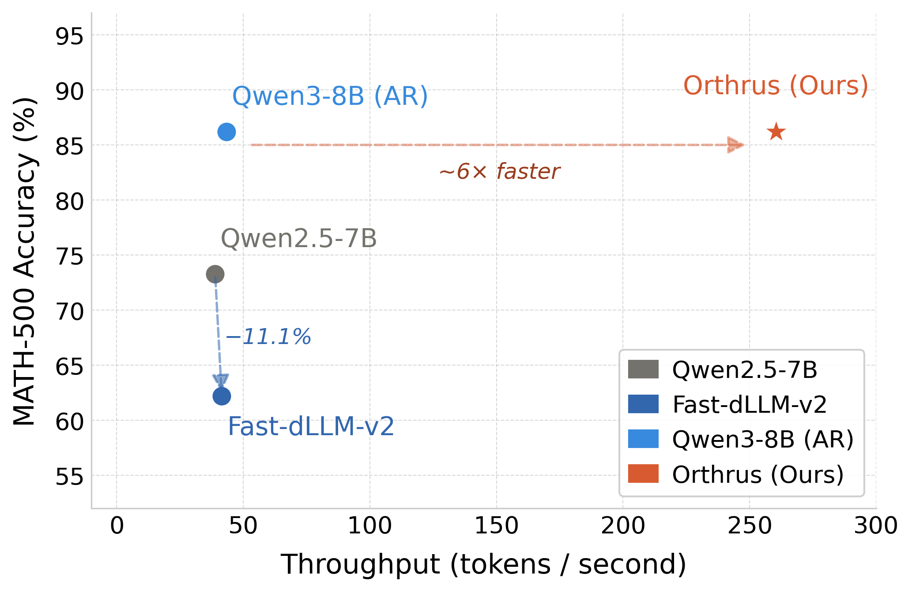

THE FRONT PAGE
EDITOR'S NOTE: As we watch the structural integrity of our industry yield to the velocity of market pressures, the remaining question is whether we will design our way out of the chaos or simply document the drift. #The systemic friction between rapid commercial deployment and foundational engineering discipline.
BREAKING VECTORS

Zero-click exploit chain targets the unreleased Pixel 10
An undocumented vulnerability sequence achieves remote code execution on Google's upcoming hardware without requiring user interaction. The discovery underscores a systemic fragility in sandboxing mechanisms, though weaponizing such a chain across fragmented firmware variants remains an expensive gamble.
LAB OUTPUTS
Hardware-constrained benchmarking tool targets the local LLM guessing game
A new utility attempts to systematically match consumer hardware with optimal open-source models, shifting local deployment away from forum-vouched folklore. The risk remains that synthetic benchmarks rarely capture the erratic memory-bandwidth bottlenecks encountered during sustained multi-turn inference.
The Fragmented Search for a True Micro-Firewall
As standard browser extensions succumb to platform-enforced API constraints, the niche pursuit of rebuilding uMatrix reveals a deeper tension: the trade-off between absolute user autonomy and the compounding maintenance burden of granular web-traffic filtering.
INFERENCE CORNER

Orthrus Adapts Speculative Decoding for Qwen3, Trading Memory Overhead for Raw Throughput
By decoupling the draft and target models without sacrificing exact output distribution, Orthrus hits a 7.8× token acceleration per forward pass. It is a win for inference efficiency, though it introduces a complex memory footprint that teams with tight hardware constraints will likely find prohibitive.